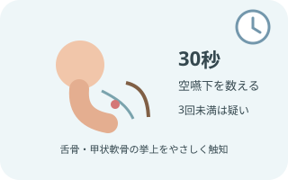

口から食べることを支える

安全と本人の希望を同時に考える
食事は栄養と水分をとるだけでなく、楽しみ、生活のリズム、人とのつながりにもなる。
「食べたい」「この味が好き」という思いを確認し、安全性、負担、得られる喜びを多職種で検討する。
摂食嚥下の5期

食べる前から食道通過まで続く
先行期で食物を認識し、準備期で取り込み・咀嚼して食塊をつくる。
口腔期で舌が送り、咽頭期で気道を守りながら通過し、食道期で胃へ運ぶ。
むせは主に咽頭期の手がかりだが、食物認知、口唇閉鎖、咀嚼、舌の送り込み、食道通過など、ほかの段階にも問題は起こる。
KTBCで全体像を見る

13項目を支援につなげる
食べる意欲、全身・呼吸、口腔、食事中の認知、咀嚼・送り込み、嚥下、姿勢・耐久性、食事動作、活動、摂食状況、食物形態、栄養を包括的に評価する。
一つの合計点だけで決めず、項目ごとの強みと課題、介入前後の変化を見る。
- 低い項目を「食べられない理由」と決めつけない
- 食べる力を妨げている、変えられる要因を探す
- 介入後に同じ視点で再評価し、効果と負担を比較する
- 正式な評価には最新版のKTBCと評価基準を用い、基準の文言を変えない
飲食物を使う前の確認

まず全身と口腔をみる
意識・覚醒、指示理解、呼吸状態、分泌物、咳、声、座位保持、口腔内、義歯、現在の食事指示を確認。
必要時は吸引、酸素、緊急連絡がすぐ使える環境を整える。
- 発熱、肺炎徴候、呼吸数・呼吸努力、SpO2と酸素需要の変化
- 湿性嗄声、弱い咳、頻回な咳払い、唾液の貯留、痰の増加
- 開口、口唇閉鎖、舌運動、口腔乾燥、汚染、痛み、義歯の適合
- 頸部・体幹の安定、疲労、食事中に保てる姿勢
- 絶飲食を含む指示、アレルギー、食形態、とろみ、薬剤、既往
評価の進め方

観察から始め、必要な評価へ進む
①情報収集と全身・口腔観察、②飲食物を使わない評価、③条件を満たす場合の直接評価、④必要時の専門的評価へ進む。
一つのスクリーニング結果だけで、経口摂取の可否や食形態を確定しない。
嚥下内視鏡検査（VE）や嚥下造影検査（VF）は、咽頭残留、喉頭侵入、誤嚥、代償手段の効果などを詳しく評価する。必要性は医師・歯科医師・言語聴覚士・看護師などで検討する。
反復唾液嚥下テスト（RSST）

30秒間の空嚥下を数える
示指で舌骨、中指で甲状軟骨付近を触知し、できるだけ繰り返し唾液を飲み込んでもらう。
喉頭が十分に挙上し、指を越えた動きを1回として数える。
- 説明して姿勢を整える
覚醒と指示理解を確認し、頸部を触れることを説明。安全に座位または安定した体位をとる。
- 舌骨と甲状軟骨を触知
強く押さえず、嚥下時の上前方への動きを感じ取る。
- 30秒間測定
「できるだけ何度も唾を飲み込んで」と伝え、確実な嚥下回数を数える。
- 結果を解釈
3回未満は嚥下障害を疑う所見。口腔乾燥、理解力、疲労などの影響も記録し、ほかの評価と合わせる。
改訂水飲みテスト（MWST）

3mLの冷水で嚥下反応をみる
施設で訓練された実施者が、冷水3mLを舌背ではなく口腔底へ入れ、嚥下を指示する。
嚥下、むせ、呼吸、湿性嗄声を観察する。
- 実施条件を再確認
直接評価が可能か、姿勢、吸引・緊急対応、口腔内を確認。
- 冷水3mLを口腔底へ
シリンジを深く入れず、舌背へ注がない。注入後に嚥下を促す。
- 嚥下後の声と呼吸を確認
発声してもらい、むせ、咳、湿性嗄声、呼吸変化、追加嚥下を観察。
- 標準の評価法で判定
4点以上なら最大2回追加し、最も低い点を結果とする。異常時は反復しない。
フードテスト（FT）

嚥下と口腔内残留をみる
施設の標準物性を満たすプリンなどを茶さじ1杯、約4g用い、舌背に置いて嚥下してもらう。
むせ・呼吸・声に加え、口腔内残留の位置と量を確認する。
- 食品と適応を照合
アレルギー、食事指示、食形態、温度、量、姿勢を確認。
- 少量を舌背へ
本人の反応を見ながら置き、口唇閉鎖、保持、送り込みを観察。
- 嚥下後を観察
むせ、湿性嗄声、呼吸、複数回嚥下、口腔内残留を確認。
- 標準の評価法で判定
結果が良好な場合のみ最大3回まで行い、最も低い点を結果とする。
中止サインと評価の限界

呼吸・声・意識の変化で止める
強いむせ、持続する咳、湿性嗄声、呼吸苦、SpO2低下、チアノーゼ、覚醒低下、食物保持、著しい疲労では中止。
口腔内を確認し、安全な体位、排出・吸引、応援要請へ。
- 不顕性誤嚥では咳が出ないことがある
- 小量の水では問題が見えず、食事量や疲労で変化することがある
- SpO2だけで誤嚥の有無を判定しない
- 肺炎の反復、湿性嗄声、原因不明の発熱、食後の呼吸変化があれば専門評価を検討
KT介入を組み立てる

評価・介入・再評価をつなぐ
課題を一度に全部変えず、目的を決めて一つずつ調整する。安全性、摂取量、疲労、本人の満足を再評価する。
効果がなければ元に戻し、別の要因を検討する。
- 覚醒しやすく、疲労が少ない時間を選ぶ
- 口腔ケア、義歯、口腔乾燥、痛みを整える
- 体幹・骨盤・足底・頭頸部を個別に安定させる
- 一口量、速度、間隔、食具、介助位置を調整する
- 食形態・とろみは専門評価と指示に基づき統一する
- 静かな環境、見やすい配置、本人が選べる声かけを整える
- 食後の口腔内残留、呼吸、声、姿勢、疲労を確認する
記録と共有

条件と反応をセットで残す
覚醒、体位、食品・物性・量、介助方法、各テスト結果、むせ・声・呼吸・残留、摂取量、疲労、中止理由を記録。
うまくいった条件も共有し、次の食事で再現できるようにする。